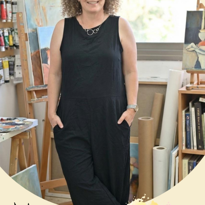
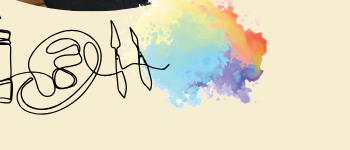

טיפול באמנות הוא טיפול רגשי, המבוסס על שימוש הבעתי בחומרי האמנות. באמצעות החומרים השונים מתאפשר ביטוי רחב, חווייתי ורגשי של חוויות, פחדים וקשיים בתוך מרחב שבו התקשורת אינה מוגבלת למילים בלבד. זהו מרחב הפותח צוהר לעולמות לא מילוליים ולא מודעים ובכך מרחיב את ההבנה. האמנות הינה כלי לביטוי וגילוי עצמי.
הטיפול הינו פרטני ומיועד לילדים ומבוגרים כאחד, המתמודדים עם קשיים מגוונים המשפיעים על התפקוד היומיומי כגון חרדה דיכאון, ומשברי חיים. אין צורך בידע או ניסיון קודם, אלא רק רצון אמיתי וכן להביא לשינוי.
אני מאמינה בקשר מיטיב ואותנטי, המאפשר תחושת ביטחון ויכול הולכת וגדלה להשיל את השכבות ולפגוש באומץ את עצמינו.
אני מאמינה בכוחה של האמנות כמסייעת לתהליכים אלו, הן במעשה היצירה ככלי המאפשר חיבור אל העצמי ואל האחר, וכמהווה קרקע להתפתחות עיבוד ושינוי.
הן בהתבוננות על היצירה כמשיבה ומאפשרת תובנה מעמיקה.
קצת עליי
שמי מיכל ואני בעלת תואר שני (M.A) בטיפול באמנות מאוניברסיטת לסלי.
סיימתי את לימודיי לפני כמעלה מעשרים שנה ומאז עבדתי כמטפלת במסגרות ציבוריות שונות כגון: מערכת החינוך, תחנה לבריאות הנפש, עמותה לילדים בסיכון ועוד.
במהלך שנות עבודתי, ליוויתי ילדים, הורים ומשפחות עם מגוון קשיים התפתחותיים, רגשיים משפחתיים ורפואיים וצברתי נסיון רב בעבודה עם אוכלוסיות שונות.
כיום אני עובדת בעמותת ‘אותי’, המתמחה בטיפול בילדים על הרצף האוטיסטי וליווי משפחותיהם ובקליניקה פרטית בהוד השרון.
בנוסף, אני לקראת סיום התמחות בלימודי פסיכותרפיה פסיכואנליטית, במכון ויניקוט לחשיבה עצמאית.
חברת יה"ת.

